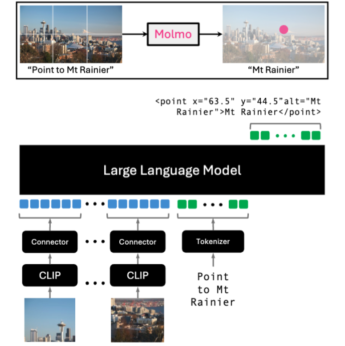
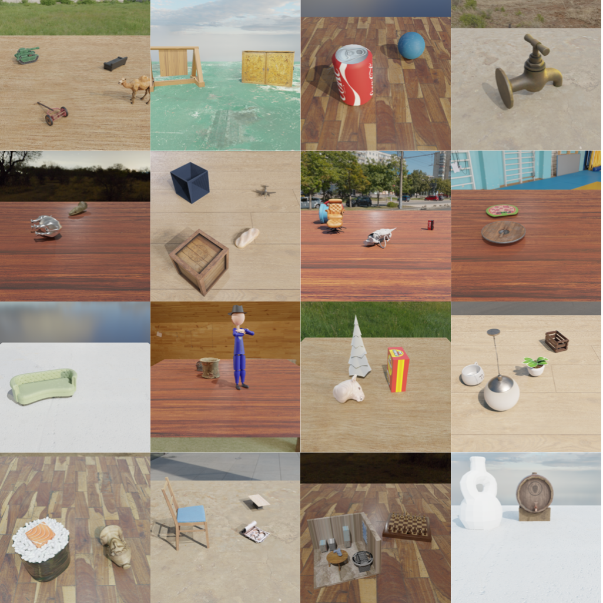
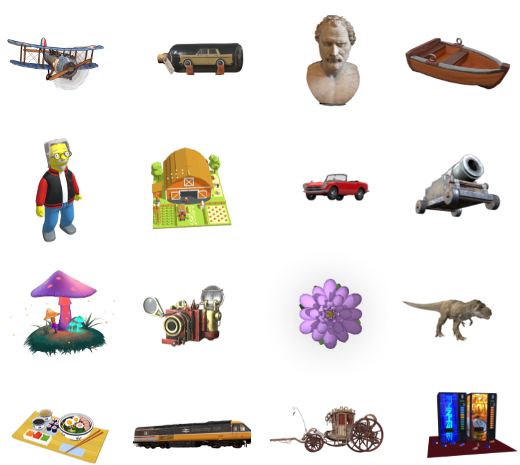

Oscar Michel's Webpage
About Me
I am first year PhD student at NYU Courant advised by Prof. Saining Xie. My research is in computer vision and AI.
Previously, I was a predoctoral researcher at the Allen Institute for AI working primarily with Dr. Tanmay Gupta and Dr. Ani Kembhavi. Before that I was an undergraduate at the University of Chicago, where I received a degree in mathematics. There I was fortunate to work with Prof. Rana Hanocka and Prof. Michael Maire.
Contact
Publications & Preprints
|  |
Molmo and PixMo: Open Weights and Open Data for State-of-the-Art Multimodal Models |
 |
|
|  |
OBJect 3DIT: Language-guided 3D-aware Image Editing |
 |
Objaverse-XL: A Universe of 10M+ 3D Objects
|
|  | |
 |